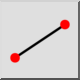
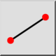
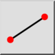
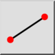

Linia z 2 punktów
Pasek narzędziowy / ikona:
 

Menu: Rysowanie > Linia > Linia z 2 punktów
Skrót: L, I
Polecenia: line | ln | li | l
Jest to tłumaczenie automatyczne.
Pasek narzędziowy / ikona:
 

Menu: Rysowanie > Linia > Linia z 2 punktów
Skrót: L, I
Polecenia: line | ln | li | l
Narzędzie to pozwala narysować sekwencję jednej lub więcej linii prostych.